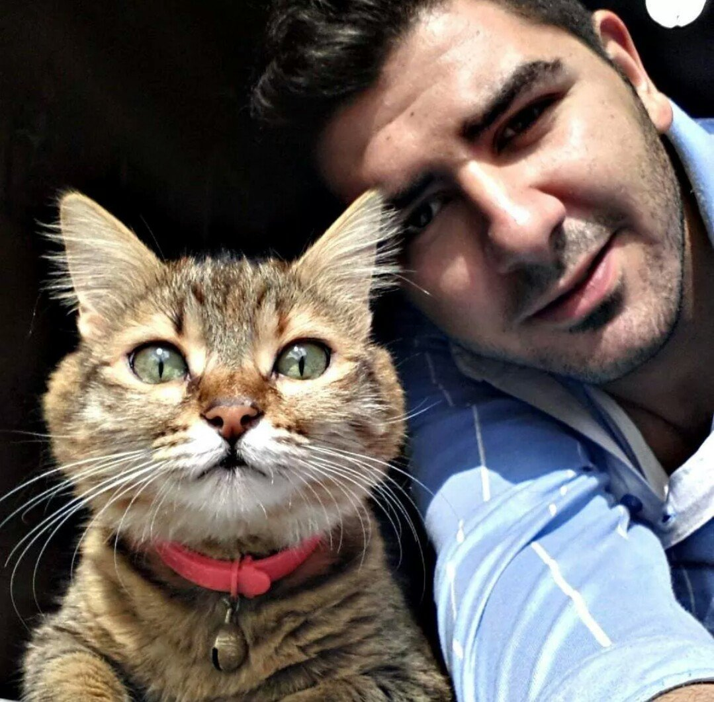

Comenzaremos diciendo que, creemos firmememnte que ellos otorgan a la vida de las personas ciertas herramientas, ciclos de responsabilidades y también amor y acompañamiento contínuo. Si bien los gatos, no son adorados por todos, se sabe que desde la época del Antiguo Egipto han cumplido un rol inportante. Durante esos años eran venerados, hoy en día ya son parte de nuestra familia.
Como por ejemplo en el enlace que dejamos a continuación Los gatos en el Antiguo Egipto
Luego de la pandemia e incluso durante su transcruso, muchas personas quedaron totalmente aisladas de su entorno, tanto social como familiar. Las mascotas se convirtieron en el equipo perfecto para esas personas. Han logrado crear un vínculo afectivo suficiente como para extrañarse y entenderse durante el transcurso de la vida cotidiana.
La imagen que vemos, expresa y confirma lo que anteriormente postulamos. Ellos, nos han demostrado que el humano requiere un contacto "social"; si social, porque a pesar de no poseer "razocinio humanos" los gatos nos brindan herramientas, expresiones, paciencia y métodos de comunicación desconocidos o no utilizados normalmente.
Muchos diran, que ese rol antes mencionado es de nuestros amigos caninos, no rechazamos esa premisa; pero si afirmamos que hoy los gatos pueden cumplir el mismo rol. Agradecemos en este post también a todos los rescatistas, ellos cumplen una tarea importante; no solamente rescantando sino siendo un puente para la creación de vínculos y adopciones.
A continuación dejamos una serie de páginas de rescatistas, todos podes ayudar a la causa, ya sea mediante el padrinazgo, compartiendo o simplemente yendo a visitarlos: